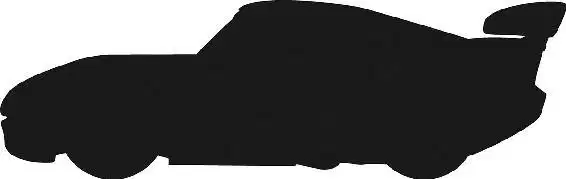

Lightning was giving the race everything he had. He was tight on Chick’s tail, but Chick was doing everything in his power to block Lightning. There was the grind of scraping metal as the two cars rubbed together. “No, you don’t—” Chick snarled.
Just then, one of Lightning’s tires popped. “Doc, I’m flat,” he cried. “I’m flat!”
“Bring it in,” Doc commanded as the yellow flag dropped, signaling that there was debris on the track. That meant the race was temporarily suspended; the other cars had to slow down and follow the pace car while the mess was removed. “Don’t tear yourself up, kid.”
Doc knew that they had to get Lightning back onto the track before the pace car came around. Otherwise, Lightning would fall behind again. “Guido!” Doc shouted. “It’s time.”
“Hey, tiny,” one of Chick’s pitties teased, “you gonna clean his windshield?”
Chick’s pitties cracked up as Lightning pulled in. But Guido ignored them. This was his life dream— to give the ultimate pit stop. And he was ready.
In one fluid movement, Guido tossed the tires into the air and bolted them onto Lightning before they could hit the ground.
Guido looked at Chick’s stunned pit crew and blew on his torque gun. Then he offered the only English he knew. “Pit stop.”
“Guido, you did it!” Luigi cried as Lightning pulled back onto the track, moving into place behind the pace car.
“Did you see that, Bob?” Darrell cried from the announcers’ booth.
Bob gaped in awe. “That was the fastest pit stop I’ve ever seen!”
On the track, the green flag dropped, and the three cars surged forward, racing at a furious pace.
“This is it!” Bob announced with excitement. “We’re heading into the final lap and Lightning is right behind the leaders. What a comeback!”
“This is it, kiddo,” Doc said as Lightning closed in on Chick and The King. “You got four turns left. One at a time. Drive it in deep and hope it sticks.”
His eyes narrowed in determination, Lightning headed toward the first turn.
“Go!” Doc cried, and Lightning did.
He pushed everything he had into high gear. Seeing his rival make his move, Chick cut quickly to bash Lightning against a wall. But Lightning was too fast; Chick missed him.
But Chick didn’t slow down. Instead, he drove forward, ramming his front bumper into Lightning’s rear. Lightning spun wildly toward the infield.
But Lightning wasn’t about to give up. At the last moment, he cut right to go left, just the way Doc had taught him. With a smooth swerve, he shot back onto the track—in the lead!
“Lightning has taken the lead!” Darrell announced to the audience. “Lightning McQueen is going to win the Piston Cup!”
Chick and The King had fallen behind Lightning. But Chick wasn’t giving up, either. If he couldn’t win, he could at least come in second. “I’m not coming in behind you again, old man!” he cried as he rammed The King, causing The King to spin into the wall.
Crash!
The crowd gasped as The King stopped in the infield, battered, dented, and unable to move.
Lightning was moving toward the finish line when he heard the boos. Confused, he looked at the giant television monitor and saw The King. He wasn’t moving. An image of Doc flashed into Lightning’s mind: Doc had looked the same way in the photo of the Fabulous Hudson Hornet’s famous crash.
Lightning screeched to a stop right before the finish line.
“Yeah!” Chick hollered as he shot past Lightning. “Woo-hoo! I won, baby! Yeah! Oh, yeah! Woo-hoo-hoo!”
“What’s he doing, Doc?” Flo whispered as she watched Lightning. He was inches from the finish line and still hadn’t moved.
Suddenly, Lightning put himself into reverse and headed back toward where The King had come to a stop.
“What are you doing, kid?” The King asked as Lightning approached. He was completely wiped out, but not completely broken; Lightning could see that.
“I think The King should finish his last race,” Lightning said humbly. And then, as gently as he could, Lightning began to push The King toward the finish line.
“You just gave up the Piston Cup,” The King pointed out, “you know that?”
“Ah, this grumpy old race car I know once told me something,” Lightning said as he helped The King to the end of the track. “It’s just an empty cup.” Doc smiled proudly as he listened on his radio.
Meanwhile, Chick was hooting in triumph, turning doughnuts in the infield. “Woo-hoo-hoo!” It took him a moment to realize that no one was cheering with him. In fact, no one was even watching him. “Hey, what?” He stopped in his tracks. “What’s going on?”
Lightning pushed The King across the finish line, and the crowd erupted in cheers! The stadium went crazy at the sight of one of the proudest moments in racing history.
“Way to go, buddy!” Mater hollered.
Fillmore teared up a little. “There’s a lot of love out there, you know, man?”
“Don’t embarrass me, Fillmore,” Sarge grunted.
The only one who wasn’t impressed was Chick. He raced onto the winner’s platform impatiently. “Come on, baby,” he said. “Bring it out, bring out the Piston Cup. Ka-chick-a! Ka-chick-a!”
But nobody came out to deliver the cup. Instead, someone tossed it onto the stage, where it clattered to the floor beside Chick. No one cheered.
“Now, that’s what I’m talking about right there, yeah!” Chick crowed. He looked around at the silent spectators. “Hey, how come the only one celebrating is me, huh? Where are the girls? Come on, where’s the fireworks? Bring on the confetti!”
A confetti cannon let out a shot and hit Chick’s bumper hard. “Owww! Hey, easy with the confetti. What’s going on? Come on, snap some cameras, let’s wrap this up. I gotta go sign my deal with Dinoco,” Chick said, starting to realize that no one cared.
The crowd started to boo.
“What’s wrong with everybody?” Chick demanded as a few of the cars started throwing garbage onto the stage. “Hey! Hey! This is the start of the Chick era!” Chick finally gave up, grabbed his Piston Cup, and scampered away.
But Lightning didn’t pay attention to any of that. He was too busy pushing The King toward the Dinoco tent. Then, as The King’s wife hurried over to give her husband a kiss, Lightning quietly headed to the Rust-eze tent. His whole pit crew had gathered there—along with the goofy brothers from Rust-eze, who had given Lightning his start in racing.
“You made us proud, kid,” one of the brothers said affectionately.
“Congrats on the loss, me bucko,” Mack said.
Doc smiled at the younger race car. “You got a lotta stuff, kid.”
“Thanks, Doc.”
“Hey, Lightning!” Tex Dinoco called from the front of the Dinoco tent. “How about comin’ over here and talking to me a minute?”
Lightning drove over to join him.
“Son, that was some real racin’ out there,” Tex said to Lightning. “How’d you like to become the new face of Dinoco?”
Lightning looked up at the fancy Dinoco tent area. The helicopter gave him a wink.
“But I didn’t win,” Lightning pointed out.
“Lightnin’,” Tex went on, “there’s a whole lot more to racin’ than just winnin’.”
Lightning was tempted. It was everything he had always dreamed of. Dinoco was a great company with a lot of money. And Tex seemed like a really great guy. Still … Lightning looked at the Rust-eze tent, where the two brothers were telling their usual lousy jokes He couldn’t help smiling.
“Thank you, Mr. Tex,” Lightning told the mogul, “but those Rust-eze guys over there gave me my big break. I think I’m gonna stick with them.”
“Well, I sure can respect that,” Tex said sincerely. “Still, you know, if there’s ever anything I can do for you, just let me know.”
“I sure appreciate that. Thank you.” Lightning thought for a moment. “Actually,” he said, “there is one thing.”
